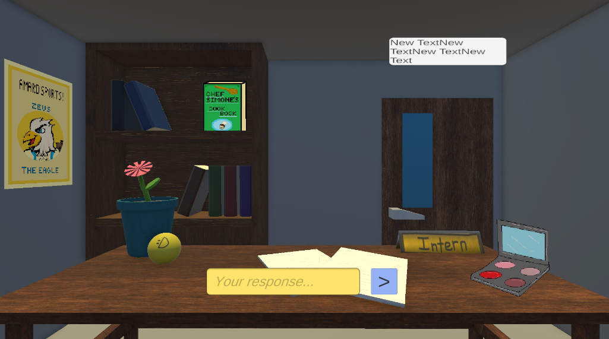
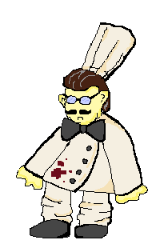
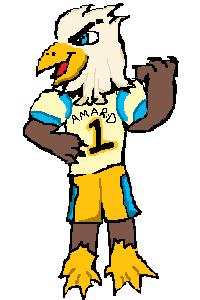
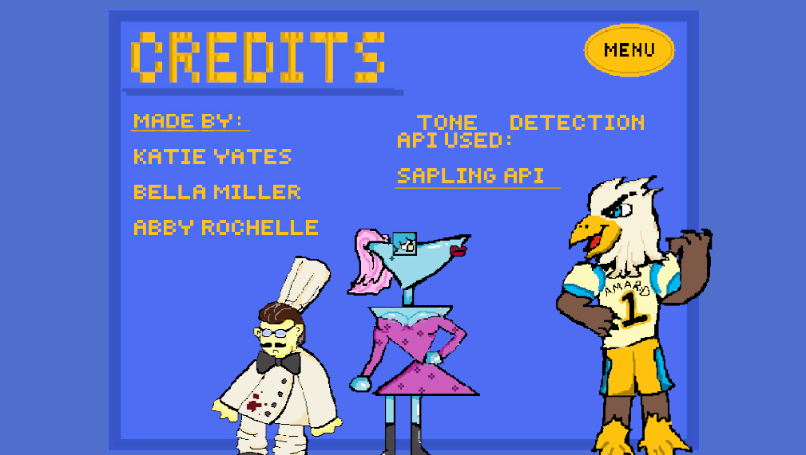
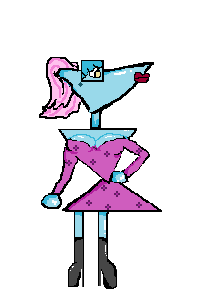

For Mascot Melodrama, I created the background for the game that is in Unity using 3D models and textures. I also created the 2D pixel items and characters for the mascots. For this project I worked in a team of three to create this in 48 hours in a game jam. It was a really fun experience to work with both 2D and 3D assets in one game and to make them look cohesive. Even though we didn't fully finish the game and still ended with some bugs while using a tone indicator API, we still presented the game to the jam participants and our professors. The game is on itch.io, go check it out! Mascot Melodrama




